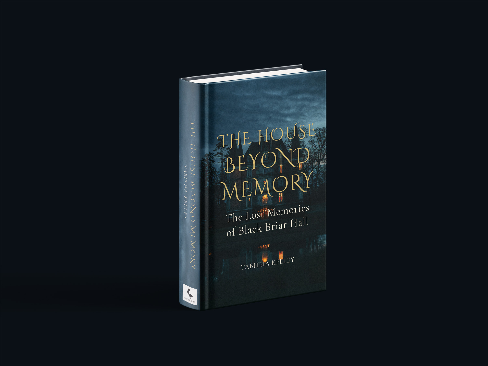
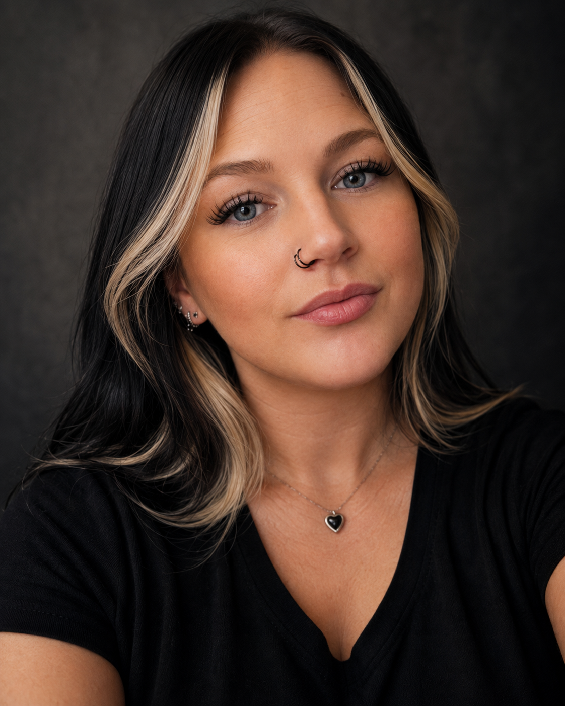

Responsive Web Design
Fernscape Interiors
A responsive four-page website designed and developed for an interior plant styling business, with an emphasis on accessibility, usability, and consistent branding.
- HTML
- CSS
- Bootstrap
- Accessibility
Responsive Web Design • Graphic Design • Accessibility
I create visually organized websites and design experiences that balance creativity, usability, and purpose.
Selected Projects
A selection of web and graphic design projects focused on thoughtful visual systems, usability, and clear communication.
Responsive Web Design
A responsive four-page website designed and developed for an interior plant styling business, with an emphasis on accessibility, usability, and consistent branding.

Book Jacket Design
A gothic book-jacket concept developed through research, typography, illustration, and print-layout exploration to create a cohesive visual identity across the front cover, spine, and back cover.

About Me
I am a graphic and web designer completing my Bachelor of Arts in Graphic Design and Media Arts at Southern New Hampshire University. I enjoy combining creativity with purpose to create designs that are visually appealing, organized, and easy to use.
My approach begins with understanding the needs of the user and finding a thoughtful way to bring the project to life. I am especially interested in responsive web design, branding, typography, and accessibility, and I enjoy continuing to learn new skills that help me grow as a designer.
Capabilities
A growing combination of visual design, web design, and technical skills developed through academic coursework, personal projects, and professional experiences.
Education & Recognition
My education has helped me strengthen my creativity, technical skills, and understanding of thoughtful design. I am proud of the progress I have made and the academic recognition I have earned along the way.
View My Résumé
Bachelor of Arts in Graphic Design and Media Arts
Southern New Hampshire University
Let's Connect
I am open to opportunities in graphic design, web design and digital design. Feel free to contact me to discuss a position or creative project.
Email Me